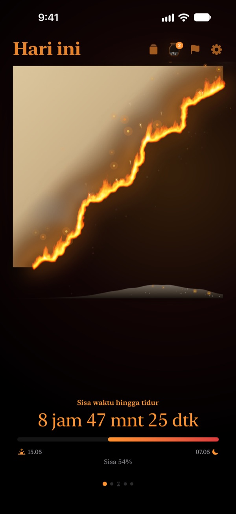
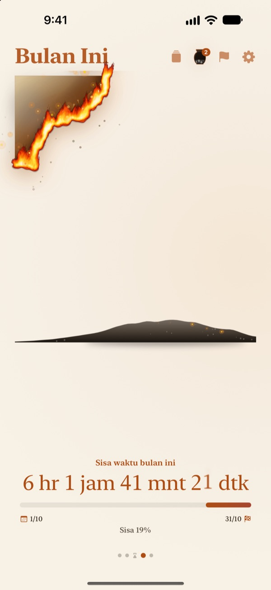
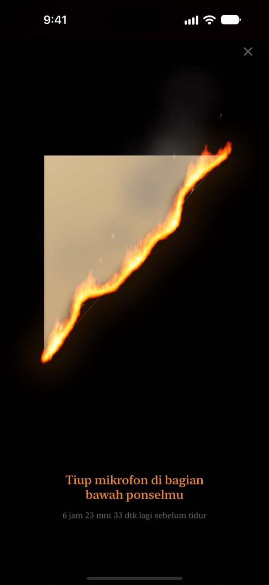
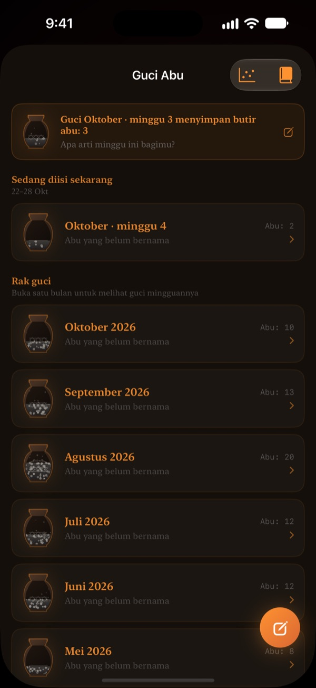

Sisa hari ini
terbakar di depan matamu
Malam yang terasa biasa saja dalam angka jadi terasa lain saat berupa perkamen yang terbakar. Setengah jam sebelum tidur, tiup layar untuk memadamkan api dan menutup hari.
Perkamen terbakar, ritual meniup api, dan refleksi semuanya gratis.

Coba tiup sampai padam
Geser jam ke menjelang tidur, lalu tahan tombolnya atau tiup ke mikrofon.
Pernah kaget, "lho, sudah tengah malam?"
Selesai makan malam, duduk sebentar, eh harinya sudah habis. Angka di jam terlihat sama setiap malam, jadi waktu yang berkurang tidak terasa. Perkamen Terbakar menampilkan sisa waktu sebagai perkamen yang terbakar, supaya kamu sadar sebelum malam lenyap.
Hari, minggu, dan tahunmu terbakar
Dari bangun sampai waktu tidur, perkamen terbakar perlahan. Lihat juga sisa minggu ini, bulan ini, dan tahun ini dengan cara yang sama.
Tambahkan target bertanggal sebagai tenggat, dan hitung mundurnya berjalan berdampingan.

Tiup untuk menutup hari
Mulai 30 menit sebelum tidur, tiup perkamen yang terbakar untuk memadamkan api. Hanya kekuatan napasmu yang dipakai, tidak ada yang direkam.
Pecahan yang tersisa disimpan. Balik dan tulis satu baris tentang hari ini di baliknya.

Waktu yang berlalu menjadi abu
Renungkan harimu dalam satu baris, lalu letakkan sebagai titik di grafik dua sumbu sesuai cara waktu itu dipakai. Refleksi terkumpul di Guci Abu mingguan dan bulanan, dan bisa dibaca lagi di Buku Refleksi.
Aliran abu menunjukkan ke mana waktumu pergi lewat grafik sebaran dan kalender bara.

Mulai dalam tiga langkah
- 1
Atur jam bangun dan tidur
Ketuk roda gigi di kanan atas. Perkamen menyala dan padam mengikuti jadwal itu.
- 2
Pilih periode
Geser antara hari, minggu, bulan, dan tahun, atau sembunyikan halaman yang tidak perlu di Pengaturan.
- 3
Tambahkan widget
Di Layar Utama atau Layar Terkunci, sisa waktu terlihat tanpa membuka aplikasi.
Tempat melihat sisa waktu
- Hari
- Dari bangun sampai waktu tidur
- Minggu · Bulan · Tahun
- Sisa minggu ini, bulan ini, dan tahun ini
- Waktu luang
- Perkamen minggu ini hanya terbakar di jam yang kamu sisihkan untuk diri sendiri (Pro)
- Tenggat
- Sisa waktu sampai tanggal target. Satu gratis
- Widget Layar Utama
- Perkamen harian ukuran kecil, sedang, dan besar. Minggu, bulan, tahun, dan tenggat ukuran kecil dan sedang
- Widget Layar Terkunci
- Lingkaran, persegi panjang, dan satu baris
- Dynamic Island · Aktivitas Langsung
- Mulai satu jam sebelum tidur atau sepanjang hari. Pilih atau matikan di Pengaturan
Bentangkan Dynamic Island untuk melihat perkamen terbakar beserta hitung mundur lengkap.
Perkamennya gratis. Pro menyimpan lebih banyak.
Gratis
- Perkamen harian, mingguan, bulanan, dan tahunan
- Meniup api dan mengumpulkan pecahan
- Refleksi satu baris, Guci Abu, dan Buku Refleksi
- Cek pagi, bisa dihubungkan ke data tidur dari app Kesehatan
- Widget Layar Utama dan Layar Terkunci, Dynamic Island
- Satu tenggat
Perkamen Terbakar Pro
- Bakar hanya waktu luangmu sendiri
- Tema: Hanji Cahaya Bulan, Celadon, Senja
- Api: Api padang, Bara, Kembang api tangan
- Bagikan pecahan sebagai kartu dan poster
- Ekspor Buku Refleksi ke PDF
- Aliran abu dua belas bulan
- Tenggat tanpa batas
Bukan langganan. Sekali beli untuk selamanya, termasuk semua fitur Pro yang hadir nanti.
Ganti perangkat? Ketuk Pulihkan pembelian di Pengaturan.
Pertanyaan umum
Waktu di widget berbeda dengan di aplikasi.
iOS tidak menggambar ulang widget Layar Utama setiap detik. Begitu aplikasi dibuka, widget langsung sinkron. Untuk hitung mundur per detik, lihat Dynamic Island dan Aktivitas Langsung di Layar Terkunci.
Sudah ditiup, tapi apinya tidak padam.
Api baru bisa ditiup mulai 30 menit sebelum tidur. Pastikan akses mikrofon sudah diizinkan, lalu tiup dengan stabil sekitar satu detik di dekat mikrofon di bagian bawah iPhone. Bunyi singkat tidak cukup.
Apakah suaraku direkam?
Tidak. Aplikasi hanya mengukur kekuatan tiupan. Tidak ada suara yang direkam atau disimpan.
Apa yang tampil saat aku tidur?
Setelah waktu tidur lewat, muncul hati yang menyala dan menunjukkan sejauh mana tidurmu berjalan sampai bangun. Paginya, aplikasi menanyakan apakah semalam kamu tidur tepat waktu; kalau terlambat, perkamen pagi ini mulai dengan bagian yang hangus sebanyak itu. Jika dihubungkan dengan app Kesehatan, aplikasi memakai jam tertidur yang tercatat tanpa bertanya.
Kapan notifikasi datang?
Satu jam sebelum tidur. Kalau tidak datang, periksa Pengaturan > Notifikasi > Perkamen Terbakar.
Apakah boros baterai?
Hitung mundur di dalam aplikasi berganti setiap detik, tapi widget diperbarui iOS dengan cara hemat daya, jadi dampaknya kecil.
Di mana dataku disimpan?
Jam bangun dan tidur, tenggat, refleksi, dan guci hanya disimpan di perangkatmu. Pengembang hanya menerima statistik penggunaan anonim, diagnosis kerusakan, dan masukan yang kamu kirim sendiri. Tanpa iklan, tanpa pelacakan.
Apakah Pro berlangganan?
Tidak. Bayar sekali dan milikmu selamanya. Di perangkat baru, ketuk Pulihkan pembelian di Pengaturan.
Laporan bug, ide fitur, atau pertanyaan lain? Kirim ke leeo@kakao.com.